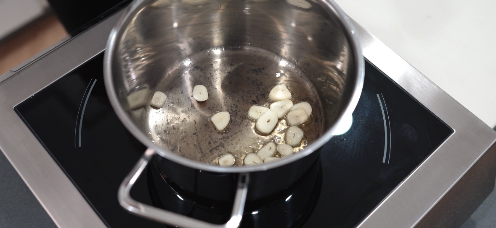
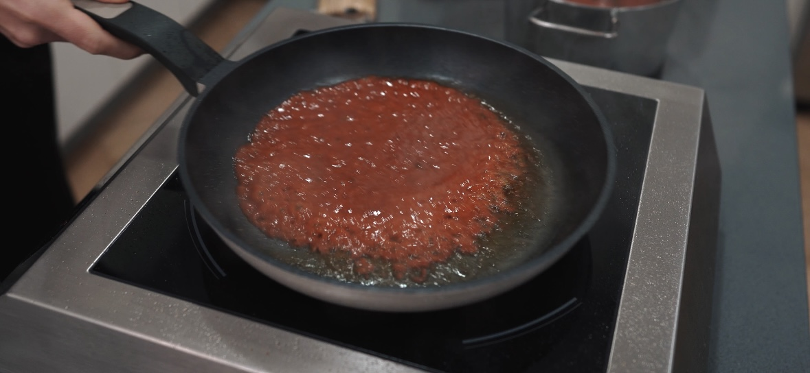
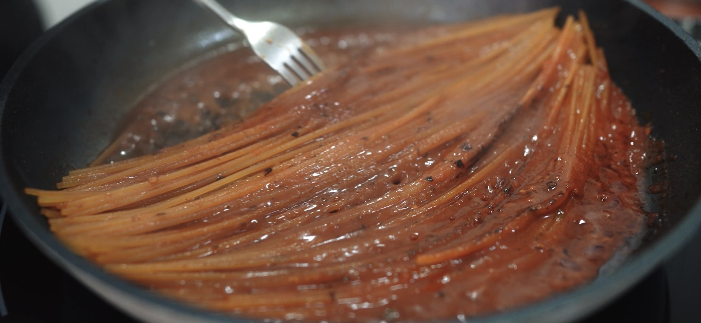
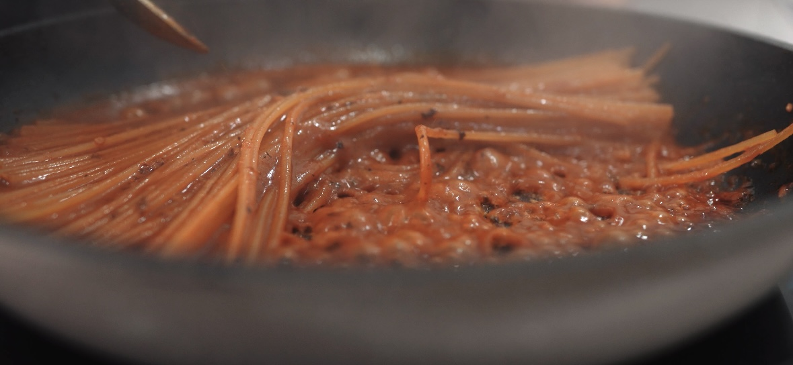
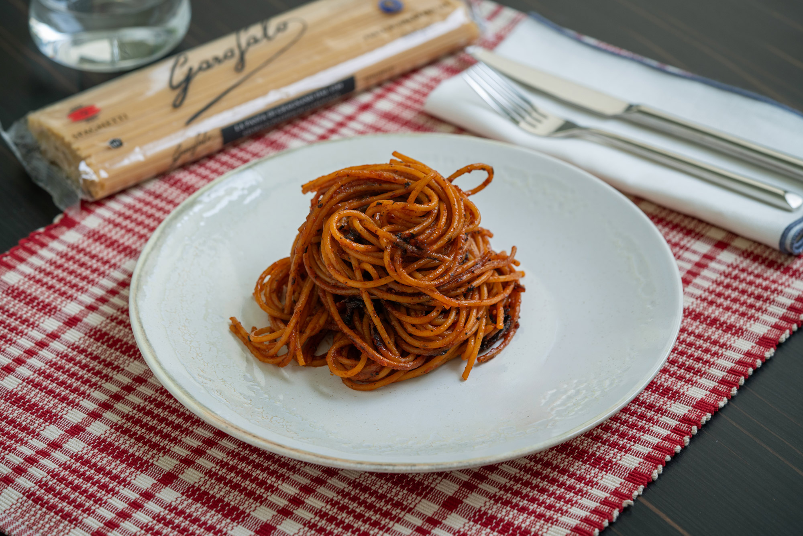

En una sartén amplia, añadimos un buen chorro de aceite de oliva virgen extra y calentamos a fuego medio. Incorporamos un diente de ajo y dos guindillas, dejando que se doren ligeramente para que liberen todo su aroma.
Este primer paso es clave: crea la base picante y fragante de los spaghetti all’assassina.
No te saltes el fuego suave ni tengas prisa; cuanto más lentamente se infusiona el aceite, más sabor tendrá la receta.🤤

Añadimos a la sartén una cucharada de concentrado de tomate y los 300 ml de salsa de tomate. Mezclamos bien con el aceite aromatizado y dejamos reducir durante unos minutos, hasta que la salsa espese ligeramente. El tomate debe perder su acidez y ganar densidad. Una buena reducción es el secreto para que la pasta se caramelice después sin quedar aguada. Aquí empieza a construirse el carácter del plato.

Este es el paso que rompe las reglas: añadimos los spaghetti crudos directamente a la sartén. No los hiervas antes. La pasta se cocinará absorbiendo la salsa de tomate poco a poco, como si fuera un risotto. No remuevas demasiado. Lo ideal es que los spaghetti se peguen ligeramente al fondo para crear zonas tostadas. Esa textura crujiente es lo que hace única a esta receta. Si te da miedo, baja un poco el fuego, pero no lo evites.

Cuando veas que la pasta empieza a secarse, incorpora agua de tomate caliente en pequeñas cantidades. Deja que la pasta la absorba por completo antes de añadir más. Así conseguirás una cocción uniforme y un sabor más profundo. Esta técnica recuerda al risotto: paciencia, fuego controlado y pocos movimientos. La pasta debe quedar al dente, pero bien impregnada del tomate, con ese punto caramelizado tan característico.

Cuando los spaghetti estén cocinados, con bordes ligeramente crujientes y centro jugoso, retíralos del fuego. Sirve directamente en el plato, sin añadir queso ni adornos: esta receta no lo necesita. El resultado es una pasta intensa, picante y adictiva, perfecta para quienes buscan sabores auténticos y con alma. Cada bocado es una sorpresa: crujiente, profundo, irresistible.

- No remuevas demasiado.
- Para hidratar la pasta mientras se cocina, mezcla agua con un poco de salsa o concentrado de tomate y una pizca de sal.
Esto potencia el sabor sin diluir la intensidad del plato.
Controla el fuego con atención,
El fuego debe ser medio-alto
Lo ideal es encontrar el equilibrio: una base ligeramente tostada, con bordes crujientes y corazón al dente.